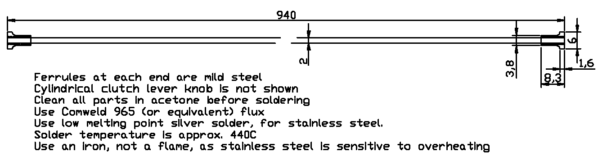

Riding to work yesterday in Canberra's peak hour, pulled away from some lights, selected 2nd and the clutch cable broke. Bit of a surprise, as she's only done 40,000 km. Took the next slipway left and pulled over to find the break at the top bend. Collected the loose bits and headed off to work. Mind you, starting in first gear is not the most pleasant of experiences. 2nd might be a better option, but I didn't have to do it again.
A call to the local dealer confirmed that there wasn't a cable in stock, but they did have some 2mm inner cable that
I could use to make a new one. See the details below -
